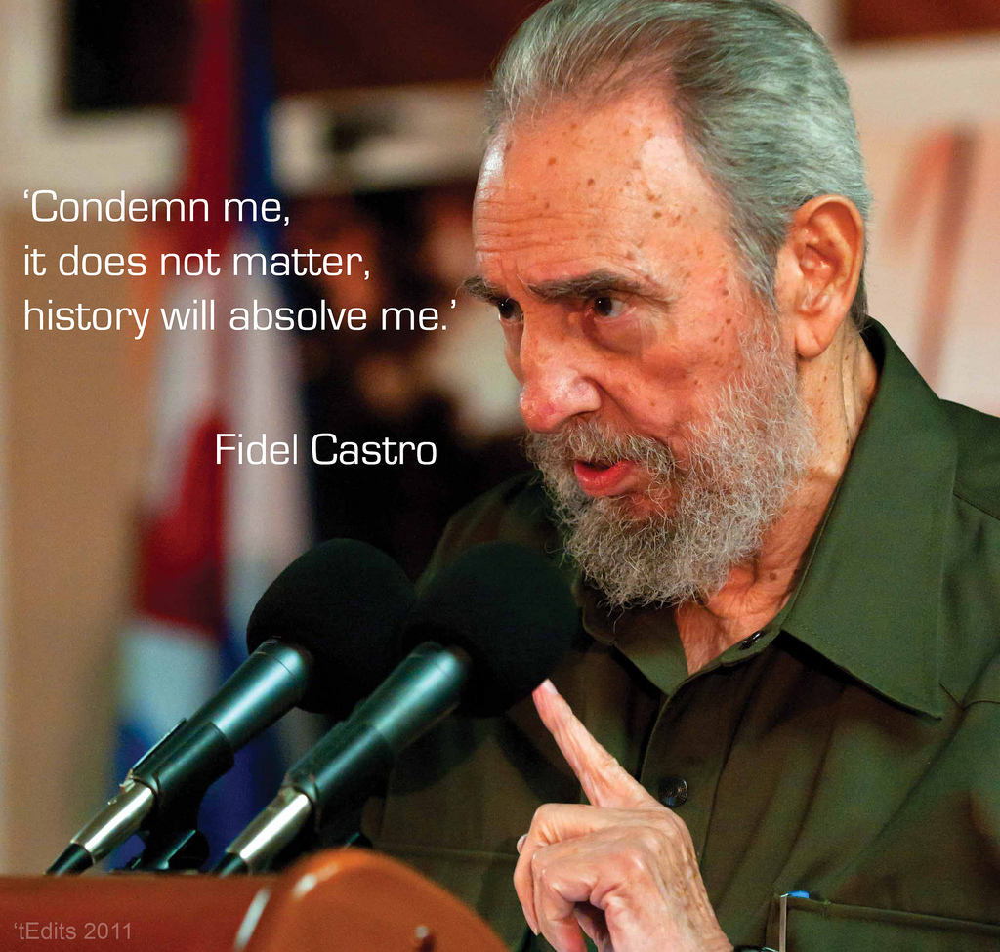

It was a shock to hear about Fidel Castro's death this morning. Not because it was unexpected, 90 years old and with a deadly cancer, but because he over time had become the Lemmy Kilmister of international politic: always true to himself and his values, dressing nearly in the same ways for years (but for those dreadful Adidas tracksuits) and considered immortal. Both died in less than 12 months, both due to cancer.
I'm not going to write an eulogy nor a critic of Fidel Castro. It is not my job and more knowledgeable people have done it. Nor it would change how you see him; he was such a polarizing figure that most will either consider him a ruthless tyrant or a iconic revolutionary. He was probably both but people from both camps usually ignore his other side.
No. What I'm going to write is about how skewed is our perception of international politics, at least in the Nato-member countries. How much of it is skewed on the side of the USA that we barely think there can be a different point of view. Or if we do, we don't understand it. Most of the life of Fidel Castro was shaped by his opposition to the USA so it seems fitting to discuss of this now, on the day of his death.
Let me answer as soon as possible what most detractors of him are thinking right now: Castro killed thousands of opposers. Many more had to flee across the sea to find refuge in Florida to escape certain death. These acts don't put Castro in a much different camp than Stalin, Mao Zedong, Pol Pot or any other socialist/communist leaders. Unfortunately such ideology, like nazi/fascism, is associated with blood-thirsty dictators who repress freedom to keep their powers throughout history, to the point that we don't even consider the chance that there could be a moderate communist president. Moderate here is to be taken as "not ruthlessly killing any opposer and repressing freedom of speech". Some examples may be the late Gorbachev, Allende and a score of socialist/communist parties throughout the world who at times shared the power with other, less leftist ones, and which never killed anybody. Sweden may also be seen as a country ruled for decades by a government with strong socialist tendencies, and with great results, economically and socially.
But the main thing to be taken here is: while it is possible to have a communist/socialist government that is also not a complete dictatorship, why every crime of it is blamed to the ideology and not on the person in charge? The same happens with nazi-fascism: Hitler, Mussolini, Pinochet are considered "bad" because of their ideology, more than because of their person. Everybody will agree that Stalin was more ruthless and a tyrant than Lenin, despite sharing the same ideology. Yet Lenin isn't exactly thought of a positive figure because he was a communist.
Why don't we also blame capitalism for the bad guy of the moment? There have been countless examples of people being killed, enslaved, sent to prison for purely economical reasons. Capitalistic reasons, so to say. Think about colonialism in Africa and the post-colonialist rulers (Google for Yakubu Gowon, for instance). Entire genocides were started just to exploit natural resources or land. Ask the Native Americans, or the Congo people under belgian rule, the South-West Africa genocide under the Germans, Apartheid in South Africa, the aboriginal people treatment by the Australian government and the systematic destruction of the indigenous culture throughout Latin America. And these are just a few examples.
It's easy to retort that these crimes could have happened also due to communism or the king/prime minister in charge at the time was totally to blame. While this could have been true if we were talking of a single episode under the rule of a single person, most of those examples are spanning decades if not centuries, under many different rulers and cultures. And it's not even to blame "white people", as modern revisionists would like to: Assyrians, surely not white, were known for deporting entire tribes who rebelled against their rule already 3000 years ago. The Mongols killed millions of people back in the Middle Ages, exclusively for the need of more land. More recently, the Armenian Genocide comes to mind.
No, the only thing all those crimes have in common, unlike crimes committed by communist/socialist leaders, is the desire to seize and exploit resources of their neighbour or enemy, for economical reasons. What's more capitalistic than this? Yet if a "capitalist" leader commit any act of aggression, especially against poorer or communist countries, is never seen as acting on the basis of his ideology but for his own interest. We may blame the person, not capitalism. We have so engrained in our brain that capitalism must be good that we don't think that some crimes against humanity may have been caused by it. No, it must have been that dictator that was bloodthirsty, not the economy. Money is inanimate after all, right?
We don't grant so much leeway to communist or nazi-fascist leaders. Every one of their mistake is a proof that their ideology is evil, inhuman and we should get rid of it for the sake of humanity.
Coming back to Castro: when the russian installed the missiles on Cuba territory and JFK menaced war, we didn't think that Cuba, a sovereign state, had the right to ask for military help to a friendly, sovereign too, state as URSS, to protect themselves against a powerful neighbour. No, of course the communist were the danger, so JFK was right in stepping in and prevent the installation of the missiles. If third world war had started because of the episode, we surely would have blamed Castro and Khrushchev, not Kennedy. Despite that the whole installation of missiles were done in response to the failed, american, Bay Of Pigs Invasion.
Fidel Castro may be remembered as a tyrant by some and as a revolutionary by others. But step back and think if you are judging him or his ideology.

Photo courtesy: Fidel Castro
Tweet Go Top
comments powered by Disqus